양장기능사 (2011-04-17 기출문제)
1과목: 임의 구분
1. 너비가 150cm인 180˚ 플레어 스커트를 재단할 때 옷감의 필요량 계산법은?
- (스커트 길이×1.5)+시접(6~15cm)
- (스커트 길이×2)+시접(5~10cm)
- (스커트 길이×2.5)+시접(5~12cm)
- 스커트 길이+시접(7~10cm)
(정답률: 67%)

2. 상반신 반신체의 보정방법 중 틀린 것은?
- 뒷판의 여유분을 접어서 주름을 없앤다.
- 뒤다트분량을 줄인다.
- 다트 분량을 줄인 ㅁ반큼 뒷옆선에서 늘여 준다.
- 앞길 옆선을 늘리고 그 분량만큼 앞허리다트를 늘린다.
(정답률: 49%)
3. 재봉기의 고장 원인 중 윗실이 끊어지는 경우가 아닌 것은?
- 실채기 용수철이 너무 강할 때
- 북집이 제대로 끼워지지 않을 때
- 바늘의 부착 방향이 나쁠 때
- 윗실의 장력이 너무 강할 때
(정답률: 80%)
4. 다음 중 가장 효율적인 재단대의 크기는?
- 두께 1~2cm, 길이 100~150cm, 너비 85~90cm
- 두께 3~6cm, 길이 180~200cm, 너비 90~95cm
- 두께 7~9cm, 길이 250~290cm, 너비 95~120cm
- 두께 9~12cm, 길이 250~300cm, 너비 130~2⑤cm
(정답률: 78%)
5. 시침실을 사용하며 두 장의 직물에 패턴의 완성선을 표시할 때 사용되는 손바느질 방법은?
- 휘감치기
- 실표뜨기
- 홈질
- 어슷시침
(정답률: 91%)
6. 가름솔의 종류 중 시접의 가장자리를 잘라서 처리하는 방법으로, 올이 풀리지 않는 옷감에 이용되는 것은?
- 필크드 가름솔
- 접어박기 가름솔
- 휘감치기 가름솔
- 바이어스싸기 가름솔
(정답률: 69%)
7. 성인의 슬랙스 제작 시 웃본의 밑위 앞뒤 길이는 실측 치수에 얼마를 더한 것이 가장 적당한가?
- 0.5cm
- 1.5cm
- 2.5cm
- 3.5cm
(정답률: 53%)
8. 다음 중 가봉 요령에 관련된 사항으로 옳은 것은?
- 가봉 시 면사를 사용하고 손바느질로 상침 시침한다.
- 가봉 시 잘못된 점이 있으면 눈대중으로 파악하여 수정한다.
- 가봉 시 주머니, 단추 등은 생략한다.
- 겉ㆍ안감을 동시에 재단하여 가봉 후 보정이 필요한 부분을 수정한다.
(정답률: 76%)
9. 길 원형의 필요 치수 중 가장 중요한 항목은?
- 동길이
- 앞길이
- 가슴둘레
- 어깨너비
(정답률: 95%)
10. 옷감과 패턴의 배치에 대한 설명 중 틀린 것은?
- 패턴에 결 방향을 표시해 놓고 패턴의 중심 방향을 옷감의 종선에 맞추어 배치한다.
- 옷감의 표면이 안으로 되게 반을 접어 패턴을 배치한다.
- 패턴은 작은 것부터 배치하고 큰 것은 작은 것 사이에 배치한다.
- 짧은 털이 있는 옷감은 털의 결 방향을 위로 배치한다.
(정답률: 82%)
11. 재봉기의 기구 중 박음질 기구에 해당되지 않는 것은?
- 보내기 기구
- 바늘대 기구
- 실조절 기구
- 실채기 기구
(정답률: 61%)
12. 성인에 비해서 일반적인 아동의 체형으로 옳은 것은?
- 앞부분이 굴신체이다.
- 앞과 뒤가 후신체이다.
- 전체적으로 수신체이다.
- 뒤허리의 경사가 완곡한 체형이다.
(정답률: 59%)
13. 다음 중 의복의 바느질 강도에 있어서 우선 생각해야 하는 것은?
- 디자인
- 기능
- 장식
- 옷의 수명도
(정답률: 73%)
14. 다음 중 봉제 작업의 끝손질에 해당되지 않는 것은?
- 포장
- 실밥 제거
- 프레싱
- 다림질
(정답률: 74%)
15. 프렌치(french) 소매의 설명으로 옳은 것은?
- 소매붙임선이 목둘레선부터 A.H 아래로 연결되어 이루어진 소매
- A.H선을 크게 판 소매
- 기모노 소매의 일종으로 일반적으로 길이가 짧은 소매
- 요크와 소매가 연결된 소매
(정답률: 75%)
16. 재봉기의 직업별 분류 중 가정용 재봉기에 해당되는 것은?
- 103종
- 96종
- 31종
- 15종
(정답률: 77%)
17. 재봉기 기구 중 여러 가지 봉제 조건에 알맞도록 윗실과 밑실에 적당한 장력을 주어 옷감과 옷감 사이에서 윗실과 밑실을 교차시켜서 좋은 박음질이 되는 역할이 되는 것은?
- 실조절 기구
- 바늘대 기구
- 보내기 기구
- 실채기 기구
(정답률: 40%)
18. 원형제도 방법 중 벼용ㅇ식 제도법의 설명으로 옳은 것은?
- 기준이 되는 큰 치수 몇 항목만을 사용하는 제도법이다.
- 단촌식과 장촌식의 방법을 함께 이용한 제도법이다.
- 초보자에게 적합한 제도방법이다.
- 인체의 각 부위를 세밀하게 계측하여 제도하는 방법이다.
(정답률: 74%)
19. 다음 그림은 어떤 체형의 보정방법인가?
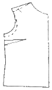
- 어깨가 처진 체형
- 새가슴 체형
- 굴신체형
- 반신체형
(정답률: 72%)
20. 의류제품의 제조원가에 해당되지 않는 것은?
- 재료비
- 일반관리비
- 인건비
- 제조경비
(정답률: 93%)
2과목: 임의 구분
21. 바늘의 표면 도금에 따른 분류 중 두껍고 딱딱한 원단의 봉제용이나 고속재봉기에 적합한 바늘은?
- S 바늘
- Cr 바늘
- N 바늘
- Hc 바늘
(정답률: 50%)
22. 등너비(back width)의 계측방법으로 옳은 것은?
- 좌우 가슴 너비점 사이의 길이를 잰다.
- 좌우 어깨 끝점 사이의 길이를 잰다.
- 좌우 등 너비점 사이의 길이를 잰다.
- 목뒤점부터 허리둘레선까지의 길이를 잰다.
(정답률: 67%)
23. 의복 제작과정의 순서로 옳은 것은?
- 의복설계→치수설정→재단→패턴설계→봉제
- 치수설정→패턴제작→의복설계→재단→봉제
- 치수설정→의복설계→패턴제작→재단→봉제
- 의복설계→치수설정→패턴제작→봉제→재단
(정답률: 68%)
24. 단추구멍의 크기로 가장 적합한 것은?
- 단추지름+0.3cm
- 단추지름+0.5cm
- 단추지름+0.7cm
- 단추지름+0.9cm
(정답률: 71%)
25. 소매 뒤에 곤주름이 생긴 경우의 올바른 보정법은?
- 소매중심점을 뒤쪽으로 옮긴다.
- 소매중심점을 앞쪽으로 옮긴다.
- 소매산을 내려서 소매통을 넓혀 준다.
- 소매산을 올려서 소매통을 좁혀 준다.
(정답률: 38%)
26. 활동이 가장 자유롭게 제도된 소매산의 높이는?
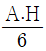
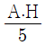
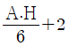
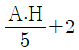
(정답률: 63%)
27. 프린세스 라인(princess line)의 설명으로 옳은 것은?
- 어깨의 숄더 다트를 높여 자른 선
- 암홀에서 N.P를 통과한 선
- 웨이스트 다트를 높여 옆으로 자른 선
- 어깨의 숄더 다트와 웨이스트 다트를 연결하는 선
(정답률: 84%)
28. 시접 한쪽을 안으로 0.3~0.5cm 내어서 받은 다음 그 시접으로 접어 한 번 더 박는 솔기는?
- 가름솔
- 쌈솔
- 통솔
- 뉜솔
(정답률: 68%)
29. 바늘땀을 한 땀만큼 완전히 뒤로 돌아와 뜨는 바느질은?
- 홈질
- 박음질
- 감치기
- 새발뜨기
(정답률: 74%)
30. 심지의 종류 중 여러 종류의 섬유를 얇게 펴서 접착제를 사용하여 접착시킨 심지로, 가볍고 올리 풀리지 않으며 올의 방향이 없어 사용에 간편한 심지는?
- 마심지
- 면심지
- 모심지
- 부직포
(정답률: 75%)
31. 다음 중 흡습량이 가장 많을 직물은?
- 면직물
- 견직물
- 마직물
- 모직물
(정답률: 28%)
32. 습식방사에 의해 제조되는 섬유는?
- 폴리에스테르
- 나일론
- 비스코스레이온
- 아세테이트
(정답률: 53%)
33. 다음 중 현미경으로 본 성숙된 면섬유의 횡ㆍ단면으로 가장 옳은 것은?
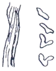
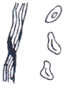
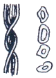
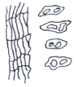
(정답률: 74%)
34. 다음 중 흡수성이 좋고 열전도성이 우수하여 여름용 옷감으로 가장 적당한 섬유는?
- 면
- 아마
- 나일론
- 폴리에스테르
(정답률: 80%)
35. 천연섬유 중에서 유일한 필라멘트 섬유에 해당되는 것은?
- 양모
- 견
- 면
- 마
(정답률: 88%)
36. 다음 섬유 중 비중이 가장 적은 것부터 높은 순서대로 나열된 것은?
- 나일론-면-양모
- 양모-면-나일론
- 면-양모-나일론
- 나일론-양모-면
(정답률: 68%)
37. 섬유의 분류 중 면섬유가 해당되는 것은?
- 종자섬유
- 인피섬유
- 엽맥섬유
- 과실섬유
(정답률: 67%)
38. 다음 중 천연섬유에 해당되지 않는 것은?
- 무기섬유
- 셀룰로스섬유
- 단백질섬유
- 광물성섬유
(정답률: 65%)
39. 섬유가 물에 젖어도 약해지지 않고 건조 시와 거의 비슷한 강도를 가지는 섬유는?
- 면
- 아세테이트
- 양모
- 폴리에스테르
(정답률: 53%)
40. 의복제작 시 안감으로 선택하기에 가장 좋은 섬유는?
- 면
- 견
- 비스코스레이온
- 나일론
(정답률: 72%)
3과목: 임의 구분
41. 다음 중 명도가 가장 낮은 색은?
- 흰색
- 빨강
- 검정
- 노랑
(정답률: 78%)
42. 다음 중 가장 시원하게 보이는 배색은?
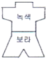
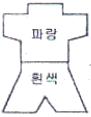
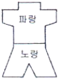
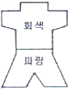
(정답률: 88%)
43. 진한 색과 연한 색을 구별하여 나타나는 색의 요소는?
- 색상
- 명도
- 채도
- 휘도
(정답률: 60%)
44. 다음 색 중 달콤함과 부드러운 맛을 동시에 주며 식욕을 가장 증진시키는 것은?
- 주황
- 녹색
- 노랑
- 흰색
(정답률: 80%)
45. 뚱뚱한 사람이 입었을 때 가장 효과적인 배색은?
- 파랑 바탕에 남색
- 파랑 바탕에 노랑
- 파랑 바탕에 빨강
- 파랑 바탕에 흰색
(정답률: 84%)
46. 큰 꽃무늬 원피스를 강조할 수 있는 가장 효과적인 연출방법은?
- 꽃무늬와 같은 색으로 트리밍 장식을 한다.
- 단색의 스카프를 이용하여 문양의 느낌을 강조한다.
- 꽃 코사지를 가슴에 단다.
- 반대색의 꽃무늬 숄을 걸친다.
(정답률: 87%)
47. 색의 지각에서 형태와 크기가 동일한 물체이더라도 색이 달라지면 더 커 보이는 색은?
- 진출색
- 후퇴색
- 수축색
- 팽창색
(정답률: 74%)
48. 색체에 대한 심리적 측면에 대한 설명 중 틀린 것은?
- 사회 문화적 배경에 영향을 받는다.
- 개인의 과거 경험에 따라 느낌이 다르다.
- 문화권에 관계없이 유행되는 색채는 모두 받아들인다.
- 자연환경에 영향을 받는다.
(정답률: 77%)
49. 동화 현상에 대한 설명 중 틀린 것은?
- 주위색의 영향으로 오히려 인접색에 가깝게 느껴지는 경우이다.
- 대비 현상과 비슷한 색채이다.
- 하나의 색이 다른 색 위에서 넓어져 가는 것처럼 보인다.
- 혼색 효과하고도 한다.
(정답률: 51%)
50. 명도 대비의 설명으로 틀린 것은?
- 어두운 색 가운데서 대비되는 밝은 색이 한층 더 밝게 느껴지는 현상이다.
- 대비되는 색의 명도차가 클수록 더욱 약하게 나타난다.
- 명도의 단계별로 느끼는 밝기가 다르게 나타난다.
- 색의 3속성 관계에서 특히 명도에 변화를 주는 대비현상이다.
(정답률: 64%)
51. 편성물의 특징에 대한 설명 중 틀린 것은?
- 구김이 잘 생기지 않는다.
- 보온성, 투습성, 통기성이 우수하다.
- 마찰에 강하여 내구성이 크다.
- 세탁 시 모양이 변하기 쉽다.
(정답률: 64%)
52. 면사 또는 면직물을 냉온(10~20℃)에서 긴장하여 수축을 방지하면서 짙은 수산화나트륨(20~25℃) 용액으로 처리한 다음 중화하고 충분히 씻어서 처리하는 가공방법은?
- 축융 가공
- 머서화 가공
- 플리스 가공
- 캘린더 가공
(정답률: 69%)
53. 양모섬유웹 또는 모직물을 비눗물에 적시고 가열하면서 문지르면 섬유가 엉키고 밀착되어 두터운 층은 만드는 성질은?
- 압축성
- 이염성
- 방추성
- 축융성
(정답률: 83%)
54. 편성물과 직물의 성능비교 시 편성물이 더 우이성을 갖는 것은?
- 내마모성
- 방추성
- 인장강도
- 내마찰성
(정답률: 46%)
55. 다음 중 인체에 대한 의복압의 허용한계로 옳은 것은?
- 10g/cm2
- 20g/cm2
- 40g/cm2
- 60g/cm2
(정답률: 40%)
56. 혼방직물이나 교직물을 염색할 때 섬유의 종류에 따른 염색성의 차를 이용하여 섬유의 종류에 따라 각각 다른 색으로 염색할 수 있는 염색방법은?
- 사염색
- 이색염색
- 원료염색
- 톱염색
(정답률: 86%)
57. 다음 중 직물의 3원 조직에 해당되는 것은?
- 사문직
- 파능직
- 주아수자직
- 바스켓직
(정답률: 62%)
58. 다음 중 무기정련제에 해당되는 것은?
- 아염소산나트륨
- 수산화나트륨
- 과산화수소
- 표백분
(정답률: 60%)
59. 날염풀에 미리 염료 용액이 피염물에 침투하거나 고착되는 것을 방지하는 약제를 혼합하여 날인한 다음 건조시키고 나서, 최후에 바탕색을 염색하여 무늬를 나타내는 날염법은?
- 직접 날염
- 발염 날염
- 방염 날염
- 분산 날염
(정답률: 44%)
60. 다음 중 타월(towel)이 해당되는 파일 직물은?
- 경루프 파일 직물
- 컷 파일 직물
- 플록
- 터프트 파일 직물
(정답률: 73%)
먼저 스커트 길이를 계산합니다. 스커트 길이는 개인적인 취향에 따라 다르겠지만, 일반적으로 무릎 아래쪽이나 종아리 중간쯤이 적당합니다. 예를 들어, 스커트 길이를 70cm로 정한다면, 이 값을 이용해 계산합니다.
그리고 스커트가 180˚로 넓게 퍼지기 때문에, 스커트 길이의 1.5배를 계산합니다. 따라서 (스커트 길이×1.5)가 필요한 옷감의 길이입니다.
마지막으로 시접을 고려합니다. 시접은 스커트의 허리와 바닥을 이어주는 부분으로, 일반적으로 6~15cm 정도가 적당합니다. 따라서 (스커트 길이×1.5)+시접(6~15cm)이 필요한 옷감의 길이입니다.
따라서 정답은 "(스커트 길이×1.5)+시접(6~15cm)"입니다.